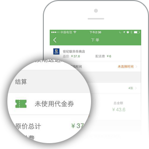

1、如何使用代金券？ 订单结算页面，选择使用一张符合适用条件的代金券，抵扣相应的金额。
2、可以同时使用多张代金券吗？ 单笔订单 一次只能使用一张符合使用条件的代金券。
3、申请退款时代金券如何结算？ 如果单笔订单全部商品退货，则退还代金券。 如果单笔订单部分商品退货，不退还代金券。
退款金额=超出优惠条件的款项直接退还 + 优惠条件内的款项按优惠后实付金额退还
例如1：买50元商品，用了一张满29减5元的代金券，需要退款1件3元的商品，则直接退款3元
例如2：买30元商品，用了一张满29减5元的代金券，需要退款1件3元的商品，则退款金额 = (30-29)+[3-(30-29)]*(29-5)/29 = 2.65
4、代金券可用于哪些商品? 代金券除香烟外全场通用，且不与0元购活动同享
5、如何获得更多代金券？ ①每笔订单交易完成后，都可分享给小伙伴一起抢红包，最高可获得15元代金券 ②关注小美快购官方微博、官方微信公众号，获取最新最及时的官方优惠码发放资讯 ③老用户可将自己的优惠码分享给新用户，新用户即可兑换新手优惠。且当新用户成功下单后老用户也将获得邀请奖励
6、新手专享的代金券有哪些领取条件？ 每个新用户可领取1次新手优惠，且一个设备上只允许1个账号领取/使用新手券，以控制某些刷单行为，从而为小美用户营造一个健康的享受优惠权益的环境
7、新手专享的代金券有哪些使用条件？ 一个用户只能使用一次新手代金券。同一手机号、同一设备、同一支付宝账号、同一微信账号等视为同一个用户！如发现用户作弊，小美将采取措施。